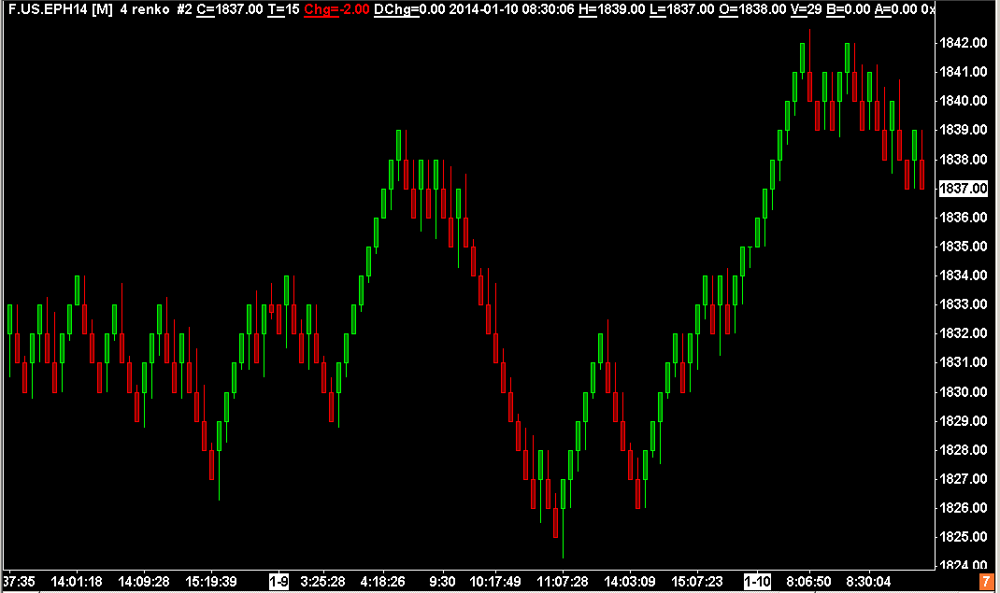
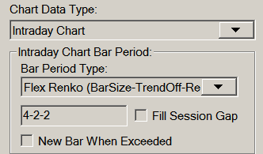

Renko Bar Charts
- Introduction
- Using Renko Bars
- Renko New Bar Mode
- New Trend Bar When Range Exceeded
- New Trend Bar When Range Met
- New Trend Bar After Range Met
- New Reversal Bar When Reversal Amount Met
- New Bar When Open Crossed (for potential reversals)
- New Reversal Bar When Reversal Amount Met Plus 1 Tick and References Prior Close
- Allow Change of Direction of Current Bar
- Renko Open, High, Low, Close Values
- Splitting of Renko Bars
- Filling in of High or Low Bar Values to Match Renko Bar Open at Reversals
- Flex Renko Bars
- Filling of Price Gaps with Renko Bars
- Overlapping Bricks
- Using Numbers Bars Study on Renko Charts
- Flex Renko Inverse Setting Bars
- Renko Education
- Renko Reversal Bar Alert Formula
Introduction
{kind=link}
The information on this page applies to version 1647 and higher.
Sierra Chart offers three different types of Renko chart bars. These are Standard Renko bars and Flex (flexible) Renko Bars, and Flex Renko Inverse Setting Bars.
These types of chart bars only work with Intraday chart data.
In a standard price bar there are four values. The Open, High, Low, and Close/Last. The Open is the first price traded for a bar. The High is the highest price traded. The Low is the lowest price traded. The Close is the final price traded. If the bar is still forming, then the Close of the bar is last price traded.
A Standard Renko chart is made up of bars, also known as bricks, which are always the same price range from the Open price to the Close price. The distance between the Open to the Close is specified in price ticks.
For example, if the Tick Size for the symbol of the chart is .25, and the Renko Bar/Brick Size is specified as 4, the Renko Bar will have a price range of 1.0 from its Open to Close prices. This is known as the Bar/Brick Size of the Renko Bar. It always is the Open to Close price range and does not include the High to Low price range.
The High and Low of a Renko bar can be optionally displayed based upon the Graph Draw Type setting. The High and Low represent the true high and low of the prices which make up the Renko bar.
The Renko Bar can be cut short if New Bar At Session Start is enabled in Chart >> Chart Settings. In which case you will see a Renko Bar less than the specified number of price ticks. This can also result in overlapping bars/bricks. For additional information, refer to Overlapping Bricks.
There are Up Renko bars and Down Renko bars, and each bar either continues or reverses the direction/trend of the previous Renko bar. A bar continues the direction of the previous bar when the price movement of the symbol moves the Bar Size in the same direction from the most recent completed Renko bar Close price. A completed Renko bar is considered a bar where the Open to Close difference is equal to the Bar Size.
A reversal occurs when there is price movement of the symbol which is twice the Bar Size, the Close to the Open range, in the opposite direction. In the case of a currently forming incomplete Renko bar, the comparison to determine a reversal is to the Close of the previous Renko bar. So there must be price movement twice the Bar Size from that Close price. In the case of the current Renko bar being complete, the comparison to determine a reversal is to its own Close price.
If the current Renko bar is not complete, then there is a reversal in place on that same bar. If the current Renko bar is complete, which is the case when its Open to Close range is equal to the Bar Size, then a new reversal bar is created.
However, in the case of when Renko New Bar Mode has been set to New Trend Bar When Range Exceeded | New Bar When Open Crossed or New Trend Bar When Range Met | New Bar When Open Crossed, then a new bar will be started before an actual reversal occurs when the Open price is crossed. Refer to Renko New Bar Mode for details.
The current forming Renko bar will continue to accumulate data and can continue the current trend, or can reverse.
When the direction/trend of the previous bar is continued with a new bar, the open of the new bar is equal to the close of the previous bar. When the direction/trend of the previous bar is reversed, the open of the new bar is equal to the open of the prior bar.
Sierra Chart Renko bars are Candlesticks which include tracking of the High and Low values that are outside of the classic brick. These are called wicks. To ensure that you see the wicks, set the Graph Draw Type in Chart >> Chart Settings to Renko Bricks with Wicks which is the default.
Sierra Chart Renko bars also update the last bar closing/last price as real-time data is received. The last bar in the chart could be either an Up or Down Renko Bar, and is not determined until the bar is complete. The final bar is never removed, but the Open value of the bar can change when the bar is closed. Refer to the image below.
{kind=link}
Once a Renko Bar/Brick (Open to Close) becomes equal to the Bar Size setting in ticks, any trading above that brick in the case of an up Renko bar or below that brick in the case of a down Renko bar, immediately starts a new bar and that new bar begins to form a new Renko bar according to the Renko bar rules depending upon the specific Renko Bar Period Type.
Using Renko Bars
- Follow the instructions of the Tick by Tick Data Configuration page to make sure you have tick by tick data.
- To set the chart bars to Renko bars, select Chart >> Chart Settings on the menu.
- In the Intraday Bar Period >> Bar Period Type list, select Renko Bar (in ticks) or Aligned Renko Bar (in ticks). For information about Aligned Renko Bars, refer to Opening Price for First Renko Bar.
- Specify the number of ticks per Renko bar in the box below. This is also known as the Bar Size. Each 1 tick is equivalent to the Tick Size setting in Chart Settings. Therefore, if the Tick Size is .25 and you specify 4 ticks, then this is equivalent to 1.0 as an actual value. This will mean that each Renko bar body will have a length of 1.0. This Bar Size always applies to the body. Not from the High to the Low of the Renko bar.
- Verify the Price Display Format is set correctly. The building of Renko bars has a dependency on this setting when performing a comparison of values. It needs to be set to the same precision as the Tick Size. For example, if the tick size is .25, then the Price Display Format needs to be .01.
- The Session Times >> New Bar At Session Start option applies when using Renko bars. We recommend keeping this option enabled, so that the Renko bars always start from a consistent point in time. However, keep in mind that this can also result in the Renko bricks overlapping. Refer to Overlapping Bricks.
- Verify the correct Tick Size is set for the symbol. If it is not correct, change it. This setting is also one the Chart Settings window.
- There are several choices for the Graph Draw Type setting when using any of the Renko Bar Bar Period Types:
- CandleStick: Uses the true Open and Close values to draw the bars. The High and Low are also displayed. The Candlestick bar color settings in Global Settings >> Graphics Settings apply when using this Graph Draw Type.
- CandleStick Body Only: Uses the true Open and Close values to draw the bars. The High and Low are not displayed. The Candlestick bar color settings in Global Settings >> Graphics Settings apply when using this Graph Draw Type.
- Renko Brick: The Renko Open and Renko Close values are used to draw the bars. The High and Low are not displayed. The Candlestick bar color settings in Global Settings >> Graphics Settings apply when using this Graph Draw Type.
- Renko Brick With Wicks: The Renko Open and Renko Close values are used to draw the bars. The High and Low are also displayed. The Candlestick bar color settings in Global Settings >> Graphics Settings apply when using this Graph Draw Type.
- Set the Intraday Chart Bar Period >> Gap Fill - * setting as required. When using a setting other than Gap Fill - None, the setting will fill the gaps between the chart bars. For complete details, refer to Filling of Price Gaps with Renko Bars.
Gap Fill - Fill Bar Gap at Start of Day is only valid when you also have New Bar At Session Start enabled. Otherwise, it has no effect.
When the opening price of the new session for the day is outside of the range of the previous Renko bar, the range from the close of the prior bar to the open of the new bar (the gap) is filled with Renko bars if using the Gap Fill - Fill All Bar Gaps | Gap Fill - Fill Bar Gap at Start of Day setting. The Renko bars will have the same Date-Time as the new Renko bar. The effect of this can easily be seen when looking at a chart with Day Session only data. - Press OK to close the Chart Settings window.
{kind=link}
Renko New Bar Mode
In Chart >> Chart Settings >> Intraday Chart Bar Period, there is the Renko New Bar Mode setting. Each setting consists of two sub settings. They are listed below.
- New Trend Bar When Range Exceeded | New Reversal Bar When Reversal Amount Met
- New Trend Bar When Range Exceeded | New Bar When Open Crossed
- New Trend Bar When Range Exceeded | New Reversal Bar When Reversal Amount Met Plus 1 Tick and References Prior Close
- New Trend Bar When Range Met | New Reversal Bar When Reversal Amount Met
- New Trend Bar When Range Met | New Bar When Open Crossed
- New Trend Bar When Range Met | New Reversal Bar When Reversal Amount Met Plus 1 Tick and References Prior Close
- New Trend Bar After Range Met | New Reversal Bar When Reversal Amount Met
- New Trend Bar After Range Met | New Bar When Open Crossed
- New Trend Bar After Range Met | New Reversal Bar When Reversal Amount Met Plus 1 Tick and References Prior Close
- New Trend Bar After Range Met | Allow Change of Direction of Current Bar
Among the two sub settings, there is one for a new trend bar and one for a reversal bar. A description of each of these individual sub settings is below.
The definition of a complete or completed Renko bar is where the Open to Close range is equal to the Bar Size setting.
New Trend Bar When Range Exceeded
A new trend bar will be started, when the current Renko bar is complete and the Bar Size has been exceeded and price is moving in the same direction as the current bar.
New Trend Bar When Range Met
A new trend bar will be started, when the current Renko bar Bar Size has been met. The volume of the trade that causes the bar size to be met, is not included in the existing bar, only the new bar.
New Trend Bar After Range Met
A new trend bar will be started, after the current Renko bar is complete and the Bar Size has been met. This means that the Intraday data record that causes the Bar Size to be met, is added to that chart bar and the next Intraday Data record will start a new bar.
New Reversal Bar When Reversal Amount Met
A new reversal bar will be established, when the reversal amount, normally two times the Bar Size has been met by the price action.
New Bar When Open Crossed (for potential reversals)
In the case of a completed Up Renko bar, once the price moves below the lower Open price, a new bar begins because a reversal potentially can occur. But this new bar has no known direction until it is established.
In the case of a completed Down Renko bar, once the price moves above the higher Open price, a new bar begins because a reversal potentially can occur. But this new bar has no known direction until it is established.
The reason for this Renko Mode is to support the use of the Numbers Bars study on Renko bars so that the chart bar where the reversal occurs, contains the volume at price data for all of the levels of the reversal bar. Otherwise, this would not happen.
New Reversal Bar When Reversal Amount Met Plus 1 Tick and References Prior Close
A new reversal bar will be established, when the reversal amount, normally two times the Bar Size has been met plus one additional tick by the price action.
The calculation for determining if a reversal takes place according to the price range needed (normally two times the Bar Size), will be in reference to the prior bar close.
Although one additional tick is required to trigger the reversal, the size of the reversal bar still will be according to the Bar Size and the distance between the prior close and the close of the reversal bar will be equal to twice the Bar Size. In the case of Flexible Renko bars, the offset will either increase or reduce this amount. However, because the additional tick is required, what happens is that a new trend bar of at least a length of 1 Tick is also started at the same time as a reversal.
When using a Renko New Bar Mode which contains this method, in some cases this will result in Renko bars where the high to low range either at the top of a down Renko bar, or at the bottom of an up Renko bar will be equal to the Bar Size and there will be a missing Renko bar/brick. Another effect of this, is that sometimes reversals are missed when they should actually exist. Therefore, this method is questionable but it is supported to create Renko bars similar to another common implementation in another program.
Allow Change of Direction of Current Bar
With this particular mode, the current building Renko bar can have its trend change at any moment. This means that the closing price can be changed from being above the open price, to below the open price, or from below the open price to being above the open price. Normally this change is not allowed. This can happen whether the Renko bar is considered complete or not.
Effectively what this means is that the normal logic of reversals never occurs.
{kind=link}
Renko Open, High, Low, Close Values
Renko bars maintain the actual true High and Low for each bar in addition to the Renko Open and Renko Close values.
There are also the true Open and Close values from the underlying price data for each Renko bar. The Renko Open and Renko Close values are the values that are used to draw the Renko body. While the actual Open and Close values are based on the actual open and close prices which occurred while building the Renko bar.
All six values are displayed in the Window >> Chart Values Window and the Window >> Tool Values Window. To view these values for each chart bar in the Tool Values Window, refer to Chart Values Tool. Refer to the image below.
{kind=link}
When using ACSIL, all of the Renko bar data is accessed with the sc.BaseData[] arrays. Use the SC_OPEN, SC_HIGH, SC_LOW, SC_LAST, SC_RENKO_OPEN, SC_RENKO_CLOSE constants with sc.BaseData[] to access these different arrays. The SC_RENKO_OPEN, SC_RENKO_CLOSE arrays hold the values for the displayed Renko bar candlestick body.
For Study and Chart Alert Formulas, the Renko Open and Renko Close values are accessed with the ID0.SG22 (Renko Open) and the ID0.SG23 (Renko Close) identifiers.
The candlestick wicks, if visible on a Renko bar, are based upon the true High and Low values of the Renko bar, which are based upon the actual underlying price data. In ACSIL these are accessed with the SC_HIGH and SC_LOW sc.BaseData[] arrays. For Study Alert and Chart Alert Formulas, these are accessed with the H or ID0.SG2 (High) and L or ID0.SG3 (Low) identifiers.
The last Renko bar in the chart, is a standard candlestick bar which represents the true Open, High, Low, Last of all of the trades which make up that bar. It is not possible to know the final values of the Renko Open and Renko Close (ACSIL SC_RENKO_OPEN and SC_RENKO_CLOSE arrays) until the bar closes and there is a new bar after it. In the case of a Renko bar for a new trading day, and at the beginning of a chart when using the Aligned Renko Bar Period Type, Renko Open and Renko Close values for this bar can be 0 until the alignment price is encountered in the data.
The actual true Close price ( ACSIL SC_LAST array ) of a Renko bar will not necessarily equal the visual Renko Close price ( ACSIL RENKO_CLOSE array ), when a Renko bar is completed.
To output the Renko bar Open and Close values as you visually see on the chart to a Spreadsheet when using one of the Spreadsheet studies, add the Renko Visual Open/Close Values study to the chart.
Opening Price for First Renko Bar and Alignment (Aligned Renko Bars)
When Chart >> Chart Settings >> Intraday Bar Period >> Bar Period Type is set to Aligned Renko, then the first bar in a chart or the first bar of the new session for the day when Chart >> Chart Settings >> Session Times >> New Bar at Session Start is enabled, is aligned based on the Bar Size setting.
This is done by waiting to build the first Renko bar until there is a price encountered in the underlying data which has no remainder when divided by the actual Bar Size.
For example, if the chart Tick Size is .25 and the Bar Size is 4 ticks, giving an actual Bar Size of 1.0, then the first Renko bar/brick does not begin until there is a price which evenly divides by 1.0.
So in this example all bars/bricks are aligned to 1.0 boundaries.
In other words, the opening price of a Renko bar will always be an exact multiple of the Bar Size.
To prevent the alignment of the first bar in a Renko bar chart or the first bar of the new session for the day, use the Chart >> Chart Settings >> Intraday Bar Period >> Bar Period Type >> Renko Bars (in ticks) setting instead.
Splitting of Renko Bars
When there are price gaps in the trading activity for symbol, or when the Intraday Data Storage Time Unit for the underlying Intraday data records in the chart data file, are not of 1 Tick units, there will be splitting of Renko bars when there is excess range on the bar which is in the same direction of the bar.
For example, a trade occurs which causes the current Renko bar to become complete and this trade price is away from the closing price of the current Renko bar by more than the Bar Size. This will cause a new Renko bar and there will be a high or low value extending beyond that Renko bar to this trade price.
The Renko close to this high or low price, will be broken down into smaller Renko bars. As many Renko bars consisting of the Bar Size setting which can be added, will be added. If only a single partial Renko bar can be split from it, that will be done as well.
For example, if the Renko Bar Size is 5, the Tick Size is 1, and there is a Renko bar with a closing price of 100 and it is a complete 5 tick Renko bar with an open at 95, but its high is at 105, then the range from 100 to 105 will be split off into a new adjacent Renko bar just to the right of it. This process repeats as necessary until there is no longer any excess range.
The opposite is true for down Renko bars.
Filling in of High or Low Bar Values to Match Renko Bar Open at Reversals
Still to be documented.
Flex Renko
{kind=link}
In Chart >> Chart Settings there is a Bar Period Type named Flex Renko. This is short for Flexible Renko. The edit box below this setting requires 3 separate parameters separated by a - character.
Format: BarSize-TrendOffset-ReversalOffset. All 3 of these parameters must be specified in Ticks. If the Tick Size for the symbol is .25, then a setting of 10 ticks will equal 2.5.
Refer to the Renko Open, High, Low, Close Values section for details about Flex Renko Open, High, Low and Close values.
Bar Size
The Bar Size specifies the Renko Bar size as a number of ticks. A tick is equivalent to the Tick Size setting in Chart >> Chart Settings.
A standard Renko chart requires that price moves the Bar Size in the current trend direction in order to form a new bar in the direction of the trend. To form a reversal bar, price has to move two times the Bar Size.
The Flex Renko allows the user to adjust the algorithm used to build a Renko Bar. Therefore, allowing different types of charts that capture different types of price action. The additional settings are the Trend Offset and Reversal Offset.
Trend Offset
Trend Offset : A standard Renko bar has a Trend Offset of zero, which means that when a new bar is formed in the current trend direction, the Renko Open value of the new bar is equal to the Renko Close value of the prior bar.
When you specify a non-zero value for the Trend Offset , the Renko Open value is offset inside the prior bar by the specified number of ticks. This means that the price of the symbol no longer has to move as far to form a new bar in the trend direction. Note: Trend Offset must be greater than or equal to zero and less than the Bar Size.
Reversal Offset
Reversal Offset : A standard Renko bar has a Reversal Offset of zero, which means that when a new bar is formed that reverses the current trend direction, the Renko Open value of the new bar is equal to the Renko Open value of the prior bar.
When you specify a non-zero value for the Reversal Offset, the Renko Open value is offset from the prior bar Open by the specified number of ticks. This offset causes the new Renko bar to overlap the prior Renko bar. This means that the price of the symbol no longer has to move as far to form a new bar to reverse the trend direction. Note: Reversal Offset must be greater than or equal to zero and less than the Bar Size.
Examples
A standard N-tick Renko Bar would be specified with N-0-0, which specifies that the trend and reversal bars are in the standard locations. A standard trending Renko Bar would have an Open equal to the prior Close, and a standard reversal Renko Bar would have an Open equal to the prior Open
A "Hybrid Renko" can be formed by using settings for BarSize-TrendOffset-ReversalOffset like N-N/2-N/2 (Example: 4-2-2). With these settings you will see the trend/reversal bar Open values are offset into the standard Renko bar by 50%. Refer to image below.
{kind=link}
Another interesting combination for BarSize-TrendOffset-ReversalOffset is N-(N-1)-1 (Example: 10-9-1), which forms a "Trend Channel". Refer to image below.
{kind=link}
Filling of Price Gaps with Renko Bars
This section explains how to fill or not to fill price gaps in trading, when using Renko bars. By default price gaps in trading are not filled when using Renko bars. Although price gaps are filled in where reversals occur.
When there are price gaps in the chart, the gap is always going to be equivalent to an amount which is evenly divisible by the Renko Bar Size . This means that each Renko bar is always in alignment with the first Renko bar in the chart, or the trading day when New Bar at Session Start is enabled in the Chart Settings for the chart.
To fill price gaps in trading when using Renko bars, select Chart >> Chart Settings. Refer to the image below for the relevant setting.
{kind=link}
From the list of gap fill options in the Intraday Chart Bar Period frame, select Fill All Bar Gaps or Fill Bar Gap at Start of Session to fill only the gap at the start of the trading day. Press OK.
To not fill price gaps in trading when using Renko bars, from the list of gap fill options in the Intraday Chart Bar Period frame, select None.
The image below shows a filled in gap at the beginning of the trading day, according to the Session Times.
{kind=link}
The image below shows the gap at the beginning of the trading day, according to the Session Times, without being filled.
{kind=link}
Overlapping Bricks
When New Bar At Session Start is enabled in Chart >> Chart Settings, and a new trading day session is encountered in the chart, then this can result in the Renko open to close range (brick) of the new bar at the start of the new trading session intersecting the previous bar brick. Refer to the image below for an example of this.
The last Renko bar brick of the prior session can also intersect the prior Renko bar brick. This is because the final bar of the previous trading session is not complete, because a new bar was forced at the start of the new trading session. So you are effectively seeing where the true closing price was when it completed due to end of the trading session versus a bar that completes normally according to the standard Renko bar rules. When there is a new trading session there is no way to really complete the last bar without fabricating prices so it is left as is.
{kind=link}
Using Numbers Bars Study on Renko Charts
When using the Numbers Bars study on a Renko bars chart, the Renko bars are replaced by the Numbers Bars. The number of bars and timestamps remains the same. The existing bars are just replaced with a numbers Bars display.
The Numbers Bars study will display the true Open, High, Low and Close values of each bar showing the true price activity which make up the bar. The altered Renko Open and Close values of Renko bars will not normally be visible unless you have set the Open andClose Marker StyleInput to display the Open and Close values through markers or through a Candlestick.
When using the Numbers Bars study, it is recommended to set the Renko New Bar Mode, to one of the options with New Bar When Open Crossed. This is so the chart bar where the reversal occurs, contains the Volume at Price data for all of the price levels of the reversal bar. Otherwise, this would not happen.
Flex Renko Inverse Setting Bars
The information in this section is effective as of Sierra Chart version 1645.
Flex Renko Inverse Setting Bars are similar to Flex Renko bars but the parameters for them have an opposite/inverse implementation but effectively do the same thing. Flex Renko Inverse Setting Bars are constructed using the very same code base as standard Renko and Flex Renko bars.
To use these bars, select Chart >> Chart Settings on the menu. In the Intraday Bar Period >> Bar Period Type list, select Flex Renko Inverse Set Bar (in ticks). The parameters are described below.
- Bar Size: The size of the brick/bar in ticks.
- Trend Bar Offset: New Renko bricks are offset from the prior brick by this amount in ticks. In other words, a new Renko bar is created when price moves by this number of ticks or more from the last completed Renko bar. The comparison is done to the Close of the prior Renko bar to the Close of the current Renko bar. The difference between these will be equal to this setting.
Set Trend Bar Offset to the same as the Bar Size to make a standard Renko bar. Trend Bar Offset cannot be less than or equal to 0. The minimum is 1. - Reversal Bar Trigger: Reversal Bar Trigger is specified as a number of ticks. When there is a reversal of the price by this amount, a new reversal bar is created.
When there is a reversal, calculating the difference between the Close of the prior completed Renko bar to the Close of the current Renko bar, the difference between these will be equal to this setting.
Reversal Bar Trigger cannot be less than 2 ticks.
Set Reversal Bar Trigger to be twice the Bar Size to make a standard Renko bar. For example, if the Bar Size is 8, then set this to 16.
Renko Education
If you have any questions about the formation of Renko bars or the underlying True Open, High, Low and Close values, then the first step is to educate yourself about Renko Bars. These are the relevant sections:
- Renko Introduction
- Renko New Bar Mode
- Flex Renko Bars
- Intraday Chart Bar Period >> Gap Fill
- Filling of Price Gaps with Renko Bars
- Splitting of Renko Bars
- Filling in of High or Low Bar Values to Match Renko Bar Open at Reversals
We believe this documentation is a very good definitive reference. Once you have understood and read that documentation about how Renko bars are built in Sierra Chart and all of the related aspects of them, at this point you need to go through an exercise on your own. The objective of this exercise is to gain an understanding about Renko bars and validate all of the data Open, High, Low, and Close that Sierra Chart is providing with Renko bars and validate the appearance of the bars.
Here is the exercise. Open a chart and set the chart bars to 1 Number of Trades Per Bar. Set Chart >> Graph Draw Type to Line on Close. Examine each and every single trade and begin to draw on graph paper or whatever method you find appropriate, Renko bars according to the specifications. Also draw draw another bar representing the true Open, High, Low and Close values.
Using the underlying tick by tick data, and following the relevant specifications based on the particular Renko New Bar Mode you are using and other relevant settings, do you get a different result than what Sierra Chart is providing? If not, and then you can see that with Sierra Chart provides does make sense. Or if you see a difference, you have to understand why there is a difference and see where you are going wrong and verify what you are doing even makes sense.
You really only have to go through this process for a couple of bars to get an idea about Renko bar construction. It is not that difficult if you just simply take the time and have some patience for this. It really is an important exercise to gain a good understanding about Renko bar construction and all of the detailed aspects behind them.
It also is important to be very faithful with the handling of gaps. When there are price gaps, make sure the true Open, High, Low, Close do not represent those because those were price levels that never traded. Unless you are using one of the Fill Gap options.
Renko Reversal Bar Alert Formula
To get a visual indication also an alert of where the Renko chart bars reverse direction, use the following formula with the Color Bar Based on Alert Condition study:
OR(AND(ID0.SG23[-1] > ID0.SG22[-1] , ID0.SG23 < ID0.SG22), AND(ID0.SG23[-1] < ID0.SG22[-1] , ID0.SG23 > ID0.SG22))
*Last modified Wednesday, 22nd February, 2023.